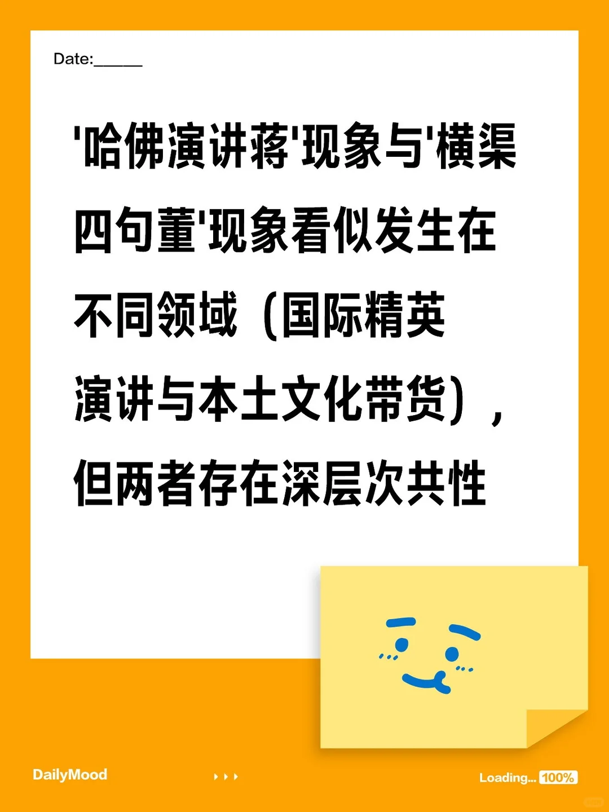

高龄少年
2025-06-08 01:12:32 · 发布
'哈佛演讲蒋'现象与'横渠四句董'现象看似发生在不同领域（国际精英演讲与本土文化带货），但两者存在深层次共性
❤️ 2
⭐ 0
💬 13
🔗 0
机读数据 data.json
评论 共 13 条 · 5 主评 / 8 回复
晓码歌🐬2025-06-08 陕西 ♡ 1
表达的同是价值观
高龄少年作者2025-06-08 广东 ♡ 1
有道理
晓码歌🐬2025-06-08 陕西 ♡ 1
同样赋予使命v带给人类希望
他大舅2025-06-12 山东 ♡ 2
主打一个不真实，一个在自己老上级老同事被网暴一言不发，一个背刺中学母校迎合歪果仁
高龄少年作者2025-06-12 广东 ♡ 1
这么看确实有些魔幻
小红薯68703FCB2025-06-09 湖南 ♡ 2
非常正确，都是精致的利己主义者，懂得给自己贴什么标签
高龄少年作者2025-06-09 中国香港 ♡ 1
有道理 然莫奈其何
小红薯68703FCB2025-06-09 湖南 ♡ 2
所以更多有素质的人要发声，而不是被一群乌合之众和没文化的丈母娘把持网络和舆论，裹挟人民群众去捧臭脚
SH246012025-06-08 上海 ♡ 1
对自己不满，找个好欺负的网暴，内心妒忌罢了
高龄少年作者2025-06-08 广东 ♡ 1
有道理 分析即认可
桃心2025-07-07 吉林
你是说丈母娘网暴老俞那事儿吗
小红薯12953198422025-06-08 北京 ♡ 1
抄袭奥巴马，讲出来真的很怪异。
高龄少年作者2025-06-09 中国香港
有道理 藤校都这样